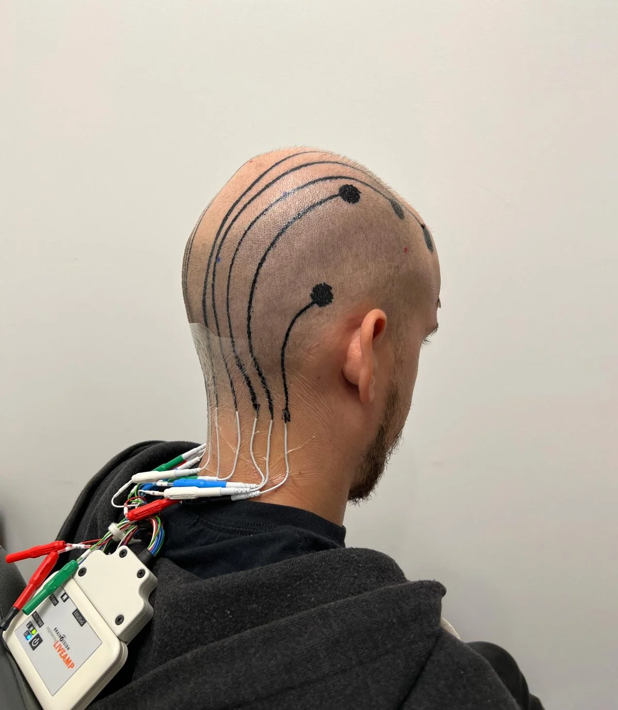

Innovative Liquid Ink for EEG Monitoring
Posted on: December 05, 2024
Scientists have developed a liquid ink that can be printed directly onto the scalp, creating electronic tattoos (e-tattoos) for monitoring brain activity. This method is faster, more comfortable, and less intrusive than traditional EEG setups. The ink, made from conductive polymers, overcomes challenges of hairy skin and ensures stable connectivity for up to 24 hours. Unlike conventional EEG electrodes, which lose accuracy as their gel dries, e-tattoos maintain consistent performance. This innovation also replaces long wires with printed connections, making the process simpler and paving the way for wireless EEG systems. The technology holds great promise for brain-computer interfaces, potentially revolutionizing how such devices are designed by making them more accessible and user-friendly.
Read the source article